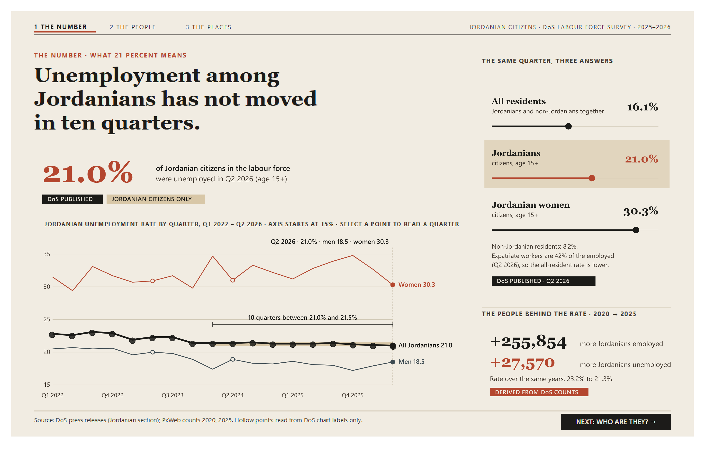
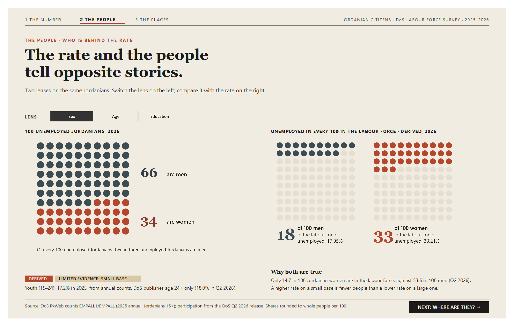
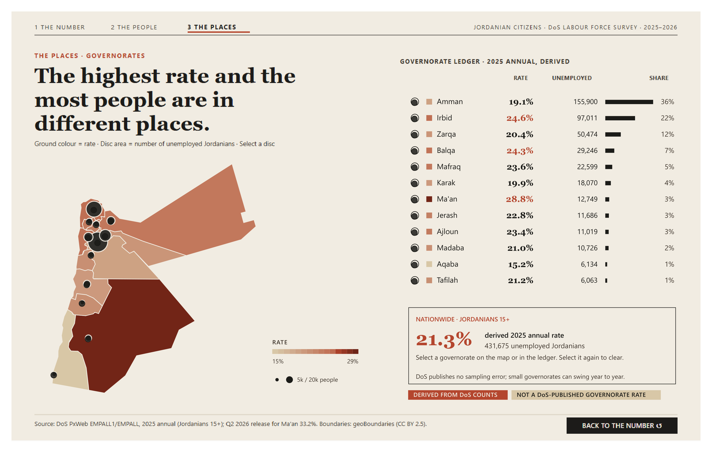

POWER BI · OFFICIAL DoS DATA · JORDANIAN CITIZENS ONLY
Jordanian Unemployment 2025–2026
One number, ten flat quarters, and the people behind it. Every figure is traced to a Department of Statistics file, page and cross-check; derived values are labelled.


